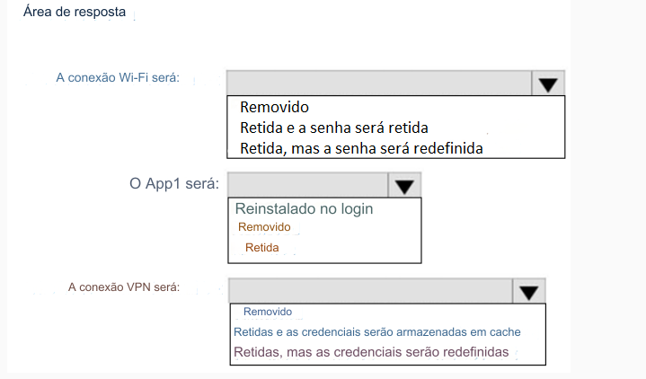

200- PONTO DE ACESSO
Você tem computadores que executam o Windows 10 e são configurados usando o Windows Autopilot.
Um usuário executa as seguintes tarefas em um computador chamado Computador1:
• Cria uma conexão VPN com a rede corporativa
• Instala um aplicativo da Microsoft Store chamado App1
• Conexões a uma rede Wi-Fi
Você executa uma redefinição do piloto automático do Windows no computador1.
Qual será o estado do computador quando o usuário fizer login? Para responder, selecione as opções apropriadas
na área de resposta.
